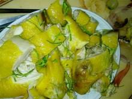

Cùng bắt tay làm thử thôi nào!
Nguyên liệu
Thực hiện:
- Gà làm sạch, tẩy bằng rượu gừng cho hết mùi rồi để thật ráo.
- Trộn hai thìa gia vị với hạt tiêu. Dùng tay xoa đều gia vị tiêu lên khắp thân và bụng gà, để 5 phút.
- Pha ba thìa dầu ăn với một thìa cà phê bột nghệ. Sau đó dùng chổi quét dầu nghệ lên khắp thân gà sao cho vàng đều.
- Chuẩn bị một nồi to đáy dày, có nắp kín. Dùng giấy thiếc lót đáy nồi rồi rải muối lên, tiếp theo là sả đập giập sắt khúc rồi đến lá chanh. Xếp gà vào nồi (tránh để chạm vào muối). Nhét một củ hành khô vào bụng gà. Đậy vung kín, bắc lên bếp đun khoảng 20 phút là chín.
- Lấy gà ra khỏi nồi, chờ nguội, chặt miếng, chấm với muối tiêu chanh.